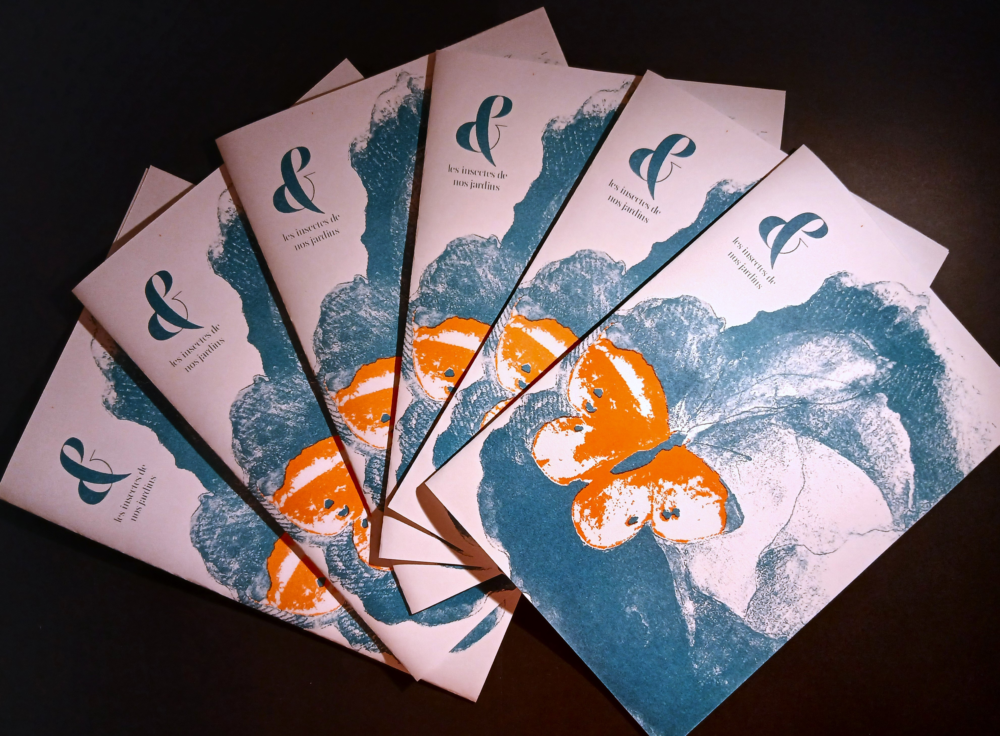
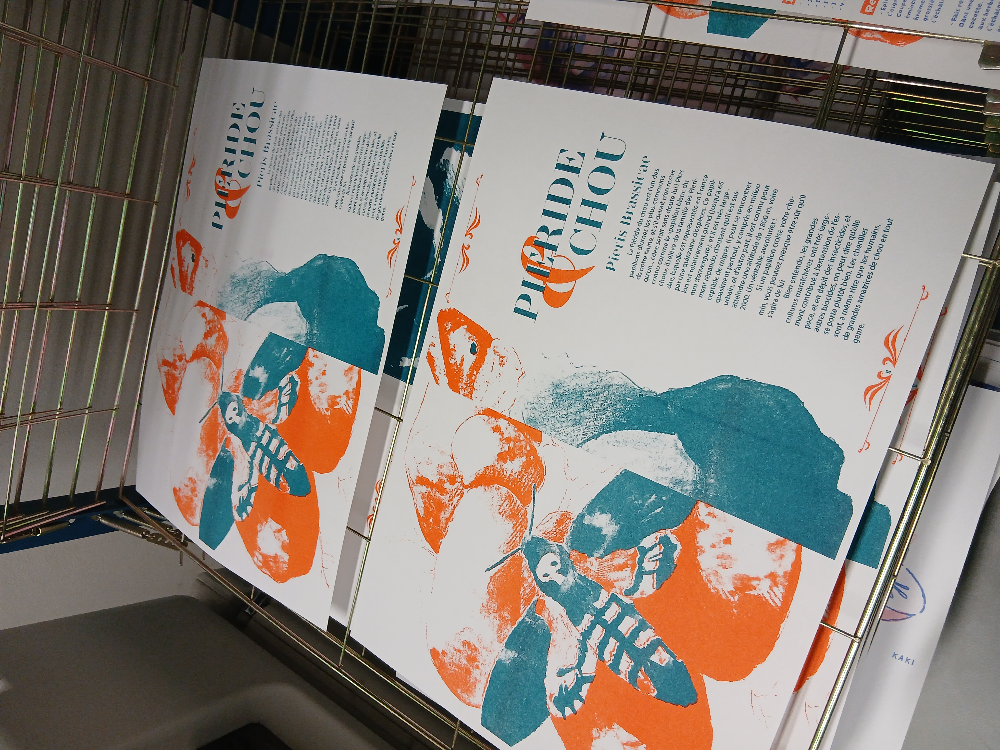
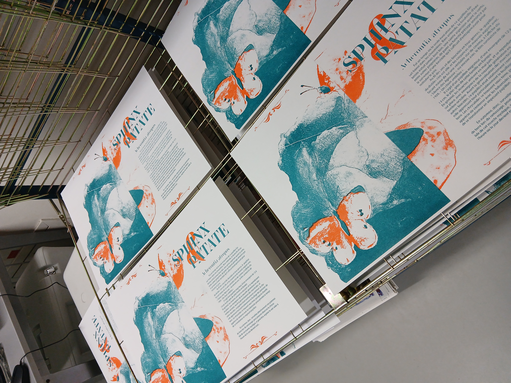
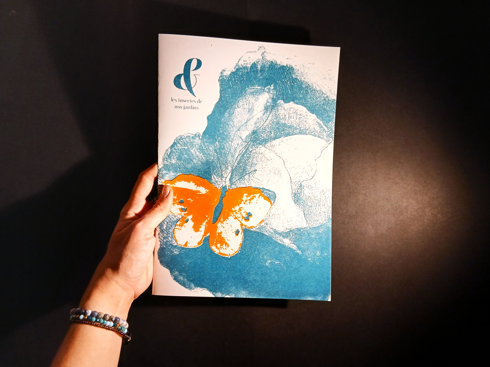
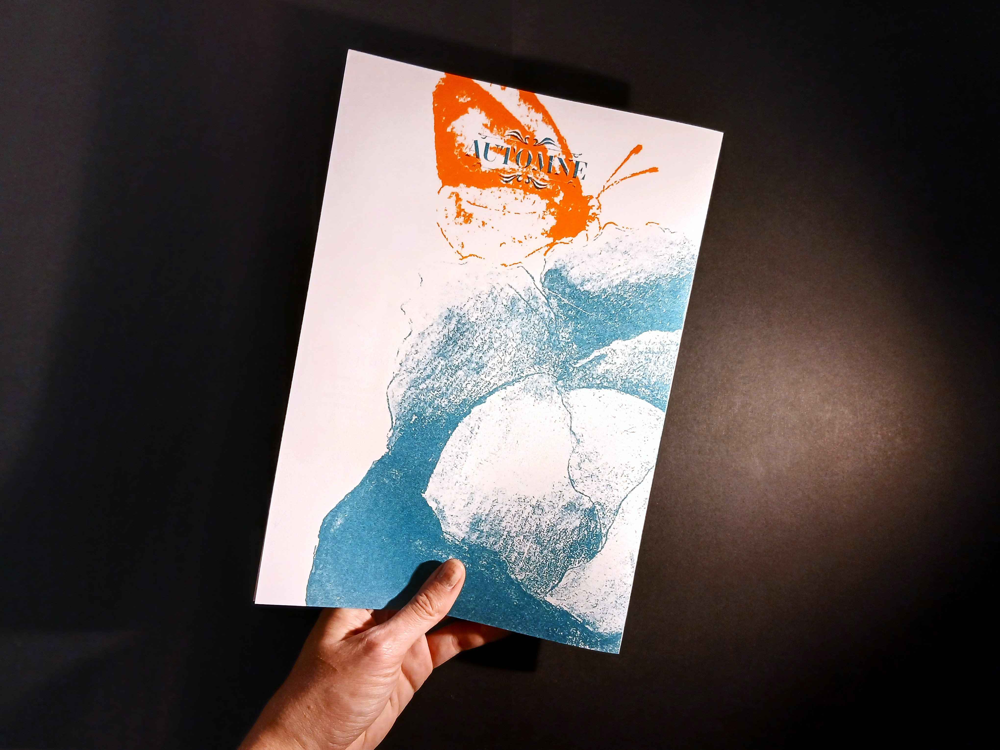
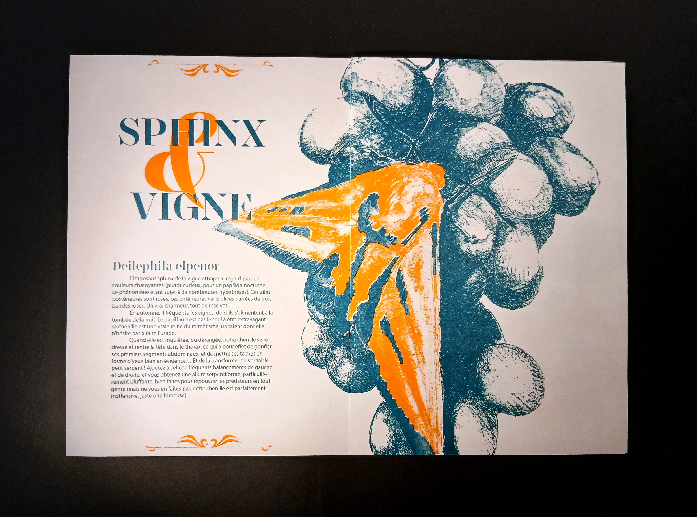

-revue &-
magazine
September-November 2025
Creation of a fictional album cover for the musician and aspiring songwriter CAM. For this project, I transcribed the feelings evoked by her lyrics, while incorporating certain codes from the musical genres that inspire CAM.
To create a divergence of visuals, I limited myself to a small number of elements and sought to use them to best communicate her universe.





